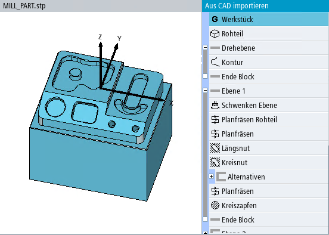

In der Maske "Aus CAD importieren" werden gleichzeitig das 3D-Modell des Werkstücks und die vorgeschlagenen Bearbeitungsschritte angezeigt.
Der Inhalt der Liste der Bearbeitungsschritte ist von der eingestellten Technologie, vom Werkstück und Werkstücknullpunkt abhängig. Der angewählte Bearbeitungsschritt wird im 3D-Modell hervorgehoben.
Bearbeitungsschritte, die zur Erzeugung derselben Form verwendet werden können, werden unter "Alternativen" zusammengefasst.
Auf Schwenkmaschinen werden die Formen zusätzlich auf Ebenen verteilt. Für jede Ebene wird ein Schritt "Schwenken Ebene" eingefügt. Auf Schwenkmaschinen werden auch Formen auf schrägen Ebenen angeboten.
Die folgende Liste enthält alle wichtigen Bearbeitungsschritte:
Bearbeitungsschritt "Werkstück"
Jede Bearbeitungsschrittliste beginnt mit einem Schritt "Werkstück". In diesem Schritt kann der Nullpunkt festgelegt werden.
Bearbeitungsschritt "Rohteil"
Im Bearbeitungsschritt "Rohteil" können Sie Abmessungen des Rohteils direkt als Rohteilschritt in ein G-Code-Programm übernehmen.
Bei einem ShopMill-Programm wird das Rohteil in den Programmkopf geschrieben.
Vor der Übernahme können Sie die Werte anpassen, um z. B. ein Rohteilaufmaß zu realisieren.
| Hinweis |
In der Auswahlliste "Rohteil" können Sie zwischen den verfügbaren Rohteilen umschalten und das passende Rohteil auswählen. Die Werte werden passend für alle Rohteile bereitgestellt. |
Block "Drehebene"
Im Block "Drehebene" können Sie die Kontur des 3D-Modells anzeigen und mit der rechten Maustaste durch verschiedene Positionen und Ebenen rotieren. Hier werden alle Drehbearbeitungen aufgeführt. Dazu gehören die Kontur und ggf. Einstiche.
Block "Ebene"
Unter "Ebene" werden alle Fräsbearbeitungen aufgeführt.